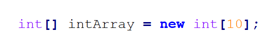
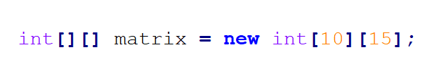
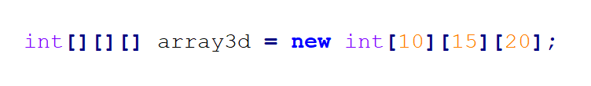

Для того чтобы создать статический массив в Java, вы должны:
Чтобы объявить переменную массива, нужно:
Чтобы проинициализировать массив, нужно после операции присваивания:
new
Мы не станем здесь отдельно объявлять переменные и отдельно проводить инициализацию (тем более, что в большинстве случаев это тоже не очень хорошо), а просто запишем, как выглядит полный код создания массивов.
Вот так мы можем создать одномерный массив целых чисел на 10 элементов:
Вот так - двумерный массив (матрицу) размером 10 на 15:
А вот так - трехмерный массив размером 10 на 15 на 20:
Добавлять размерностей массива мы можем до бесконечности (наверное), но мы помним, что использование даже трехмерных массивов - это уже очень плохой звоночек в коде, поэтому останавливаемся здесь.
Последнее, что нам нужно вспомнить про объявление массивов - это то, что мы можем записать квадратные скобки
То есть, вот такой вариант объявления массивов:
картинкаИ такой:
картинка
Абсолютно эквивалентны.
(Но второй вариант все равно хуже и об этом есть отдельная ошибка )
И, наконец, все что нам остается это сказать - где же во всем этом ошибка?